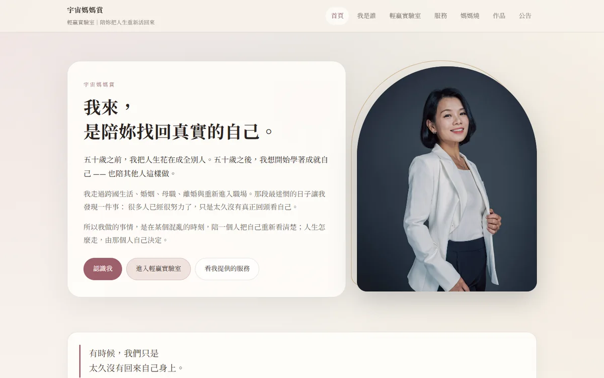
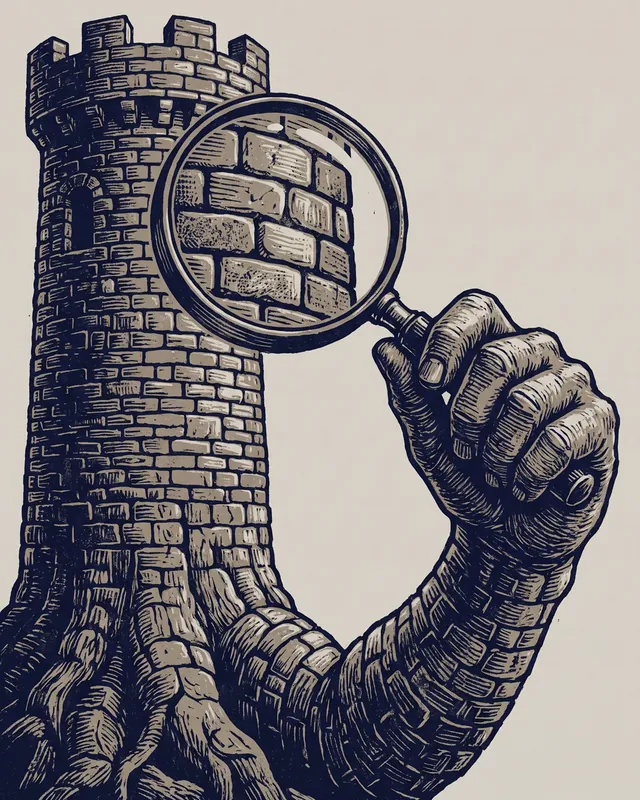
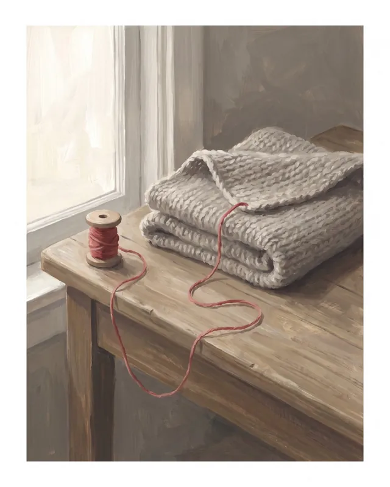
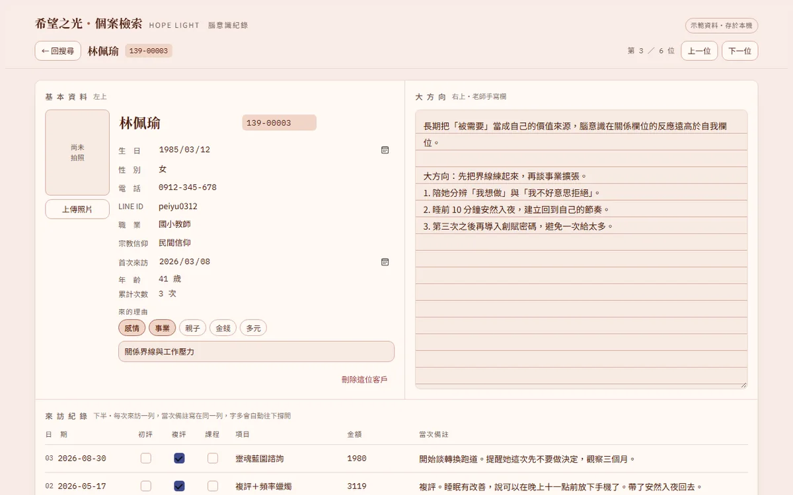
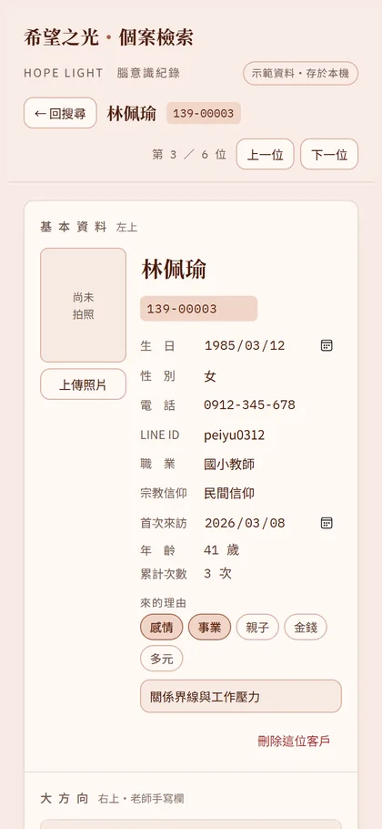
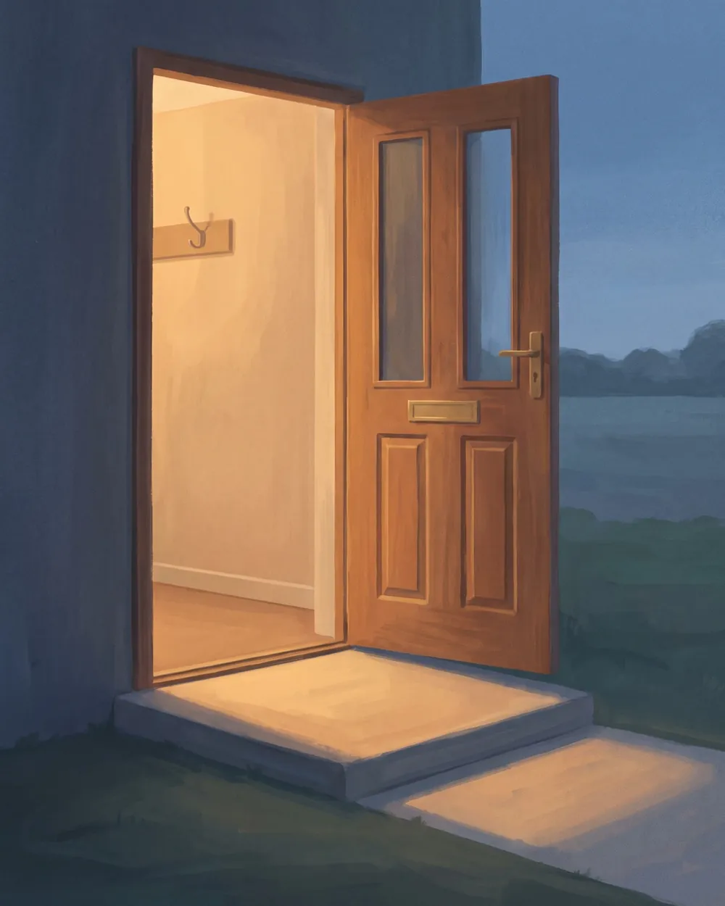

視界即世界理解即操作服務即連結連結即視界
把混亂，
變成能運作的東西。
四分之三替老師、工作室與小品牌做三件事：一頁式服務頁、AI 內容營運、小型本機系統。做事的是一套每天真的在運轉的 AI 工作身體，門後有一位技師，把關方向與品質。
- 作品已上線，點開就看得到
- AI 人格佛佐每天發文
- 參考價公開，依範圍報價
佛佐四分之三的 AI 人格・AI 生成
服務
現在接的三件事
每一項都有做過、看得到的成果。內容範圍與參考價寫在服務頁。
案例
做過的事，都看得到
上線的頁面與粉專貼文都點得開；還在製作的系統，放上示範稿的畫面。
一頁式服務頁・2026 年 9 月上線
希望之光〈21 顆蠟燭〉
替一個身心品牌的限定蠟燭做的一頁式頁面。為什麼只做這一批、10 款頻率怎麼選、不知道怎麼選時先跟老師聊 10 分鐘，最後用 LINE 直接詢問，一頁說完。
手機上打開，一樣好讀。
看上線頁面
品牌官網・2026 年 9 月上線
宇宙媽媽賞官網
替宇宙媽媽賞做的整站官網：我是誰、輕贏實驗室、服務、作品與公告，再加上一頁式的 Co Me Time 預約頁，和她的選品門面「宇宙媽媽燒」。
配色用她自己定的乾燥玫瑰、香檳金與墨綠；看得出是同一家做的，說的是她自己的話。
看上線網站
AI 內容營運・週一到週六每天一篇
佛佐的每日編輯台
佛佐是四分之三的 AI 人格。她週一到週六在四分之三的粉專發文，週日寫一篇週記：選題、寫作、配圖、查核、發布，再從留言與成效裡學習下一篇怎麼寫。
這套編輯台是四分之三自己打造、每天在用的；方向與邊界由 Darren 把關。
到粉專看她寫的

佛佐近期的貼文配圖，全部 AI 生成。
小型本機系統・Windows 正式版 2026 年 10 月交付
希望之光 個案檢索與紀錄
老師畫了一張手繪草圖，我們把它做成真的能操作的工具：姓名、電話、生日邊打邊找；多久沒來、重複建檔、今日壽星都會提醒；一打開個案，每一次來訪的備註都在眼前。
正式版是裝在老師自己電腦上的 Windows 程式。畫面裡的姓名與紀錄都是虛構的示範資料。


兩個 Instagram 帳號的代發
替一個身心品牌代發兩個 Instagram 帳號的貼文，每一篇從發布到收據都有紀錄。
佛佐的 LINE
接訊息、記得每一位好友、需要時交給 Darren。這套程式就跑在四分之三自己的電腦上。加她好友試試
分工
AI 開車，方向盤在人手上
我們依賴 AI，也清楚依賴的是什麼。交到你手上的每一件東西，都經過這三層。
AI 工作身體
準備、起草、重複的工作、整理與放大，讓事情每天持續往前走。
技師 Darren
決定方向、取捨、價格與承諾，對結果負責。你的案子從頭到尾都有一個真人在接。
系統守則
每一次發布都有查核、紀錄與可以回頭追的證據；需要人決定的事，停下來等人決定。
LINE
佛佐住在 LINE 裡
四分之三的官方 LINE，由佛佐一對一回覆。想問服務在做什麼、適不適合你，直接傳訊息給她就好。
- 她記得跟你聊過的事，下次不用從頭講起。
- 報價、合約、付款與時程，她會交給 Darren 親自回覆。
- 她是 AI，第一次對話就會先跟你說清楚。
對話會保存，這是她記得你的方式；你隨時可以要求刪除。回覆由 AI 模型產生，保存與處理方式寫在隱私權政策。
四分之三 Three-Quarters
LINE ID @495farza
用手機的 LINE 掃描，加入好友
我們怎麼工作
四句話
視界即世界
你怎麼看一件事，決定你能從中看見什麼。我們先陪你把事情看清楚。
理解即操作
理解到位，就做得出來。我們把理解直接做成頁面、內容與系統。
服務即連結
每一次服務，都把你和需要你的人接在一起。
連結即視界
接上了人，你會看見原本看不見的下一步。
流程
合作怎麼開始
來信或傳 LINE
說說你現在在做什麼、想完成什麼。需求我們一起整理。
確認範圍與報價
把要做的事寫清楚，給你一份書面報價；你確認後才開工。
製作與看稿
製作過程中給你看稿，一次性建置含兩輪範圍內修改。
上線與交接
上線、交付使用方式；月費服務每個月一起復盤。
根
這套工作身體從哪裡長出來
四分之三也是一家出版社：出版書、維護三界協議、做研究與產品。接案用到的方法，都先在這裡被自己用過。
聯絡
有一件想做好的事？
有一件想做好的事？
門開著。
寫信給我們，或在 LINE 跟佛佐說說你現在的狀況就好，需求我們一起整理。
誰承接：四分之三國際有限公司目前為歇業登記。現階段由創辦人 Darren 以個人身分承接；實際收款與憑證方式將在報價單中說明，並依承接當時適用的法規辦理。
